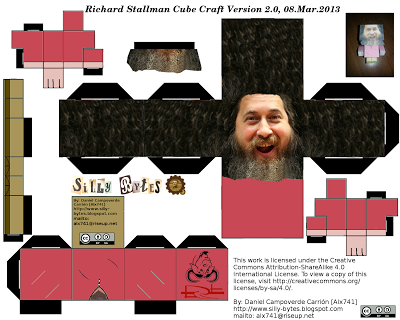
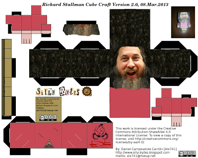

Cube Craft de Richard Stallman 2.0
Hoy he decidido tomarme un momento de ocio haciendo una segunda y mejorada versión del Cube craft de Richard Stallman.
Versión 1.0: http://www.sillybytes.net/2012/07/cube-craft-de-richard-stallman.html
Esta vez luce más cómico y su aspecto en general esta bastante mejorado con respecto al anterior.
Sin más que decir dejo por aquí el Cube Craft:

Hoy he decidido tomarme un momento de ocio haciendo una segunda y mejorada versión del Cube craft de Richard Stallman.
Versión 1.0: http://www.sillybytes.net/2012/07/cube-craft-de-richard-stallman.html
Esta vez luce más cómico y su aspecto en general esta bastante mejorado con respecto al anterior.
Sin más que decir dejo por aquí el Cube Craft:
